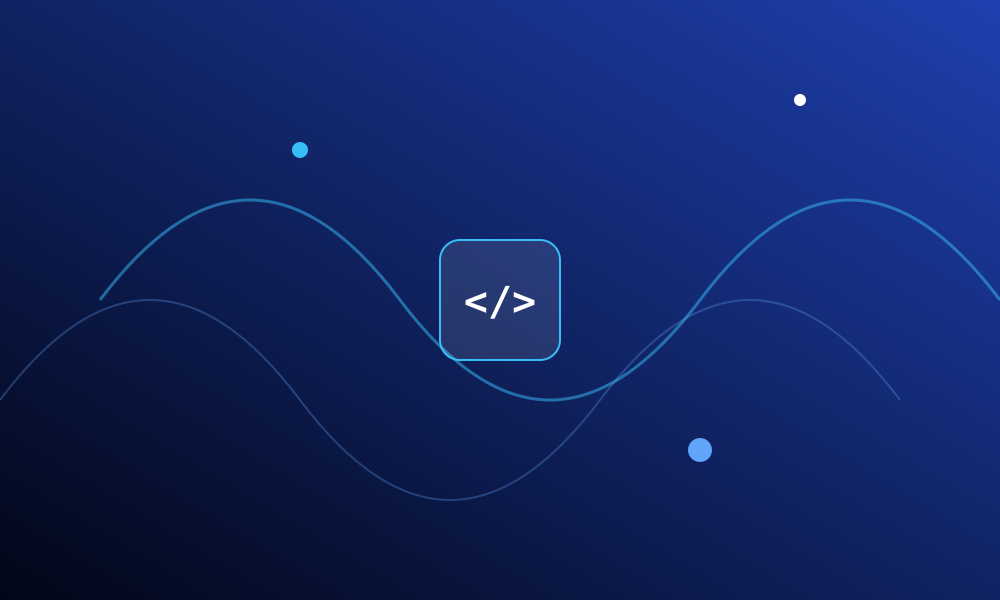

Discover our history, mission, and the incredible journey we've embarked upon.
The Indian Society for Technical Education (ISTE) is a national organization that focuses on improving the quality of technical education in India.
The ISTE Student Chapter at ADIT works towards bridging the gap between theoretical knowledge and practical application through hands-on learning, technical events, workshops, and collaborative projects.

To promote learning, teamwork, creativity, and real-world problem solving through technical activities and practical exposure.
To create technically skilled, innovative, and future-ready engineers.
The chapter provides students with opportunities to participate in technical workshops, seminars, coding activities, and innovation-driven events that help strengthen both academic and practical understanding.
This mini project has been developed as part of the Basic Web Designing Semester 2 curriculum at A.D. Patel Institute of Technology (ADIT).
We sincerely acknowledge the guidance and support of:
Developed by
Rutva Jakhiya and Ushna Khan